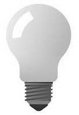

Mit tud a JavaScript?
Az oldalt készítette
Nyomtasd ki!
Nappali mód!
Éjjeli mód!
Kattints ide a pontos dátum és idő megjelenítéséhez!
Dátum törlése!
Kapcsold FEL a lámpát

Kapcsold LE a lámpát!
Megváltoztathatod a bekezdést!
Betűméret
Betűszín
Betűtípus
Szegély
Belső margó
Külső margó
Háttérszín